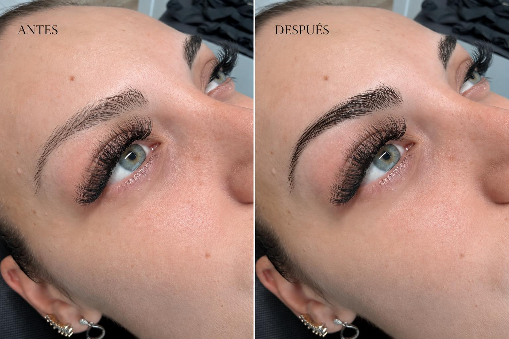
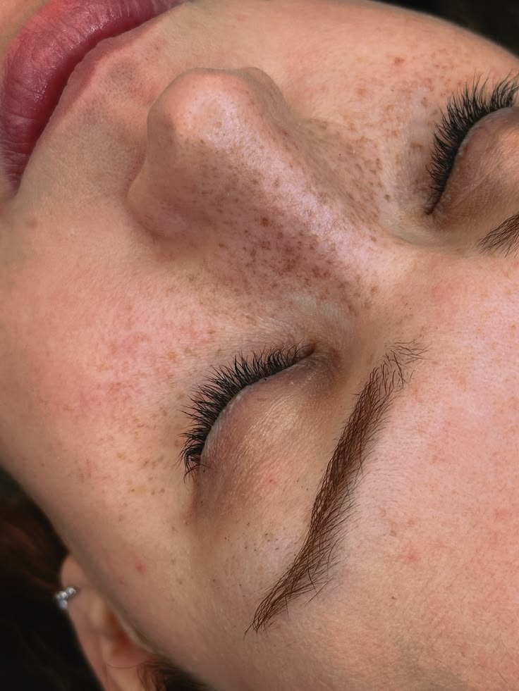

Objetivo documentado: ordenar y definir la ceja respetando su crecimiento. La técnica se confirma después de valorar pelo, piel y rasgos.
Ver Natural BrowCasos propios · Granollers
Nohuska Results Lab.
Una colección de casos reales y autorizados para entender el objetivo, la técnica y los límites de cada tratamiento antes de reservar. Una imagen no es una promesa: cada piel, pelo y evolución son distintos.

Casos autorizadosMaterial propio de Nohuska
Objetivos clarosQué se buscaba y qué se valoró
Expectativas realistasSin prometer el mismo resultado
Cómo leer una imagen
La prueba necesita contexto.
En cada ficha indicamos qué tratamiento se realizó, qué se observó antes y qué parte de la evolución está documentada. Cuando todavía no existe una fotografía curada, lo decimos expresamente. La valoración profesional sigue siendo necesaria para decidir si una técnica encaja contigo.
Casos reales · Nohuska
Explora por tratamiento.

Objetivo documentado: abrir la mirada adaptando la curvatura a la longitud, dirección y resistencia de la pestaña.
Ver lifting
Límite importante: la micropigmentación capilar no crea cabello ni trata la causa de la caída. La viabilidad se decide tras estudiar zona, piel y objetivo.
Ver capilar
Objetivo documentado: crear una distribución irregular y coherente con el rostro, evitando una plantilla idéntica para todas.
Ver frecklesEvolución
Antes, recién realizado y curado.
La lectura más responsable compara los momentos que estén disponibles y la fecha de cada fotografía. El resultado inicial puede verse más intenso que el asentado; la retención depende de cada persona.
¿Quieres saber si encaja contigo?
Envíanos qué te gustaría mejorar, tu localidad y el tratamiento que has visto. Te orientaremos antes de reservar y te indicaremos qué material o valoración necesitamos.
Consultar mi casoPreguntas sobre los casos
¿Las fotografías son de Nohuska?
Sí. Esta página reúne material propio y autorizado que ya se identifica en las fichas de cada tratamiento.
¿El resultado será igual?
No. La piel, el pelo, los antecedentes, los cuidados y la evolución individual hacen que cada resultado sea distinto.
¿Puedo reservar solo viendo una fotografía?
La fotografía ayuda a orientarte, pero primero valoramos tu caso y confirmamos si la técnica es adecuada.
¿Dónde se realizan los tratamientos?
En Nohuska Beauty Lab, Avinguda Sant Esteve, 40, 08402 Granollers, con cita previa.

Casos revisados por Valentina
La selección y la explicación de cada caso se basan en el material disponible y en una comunicación responsable de resultados.
Encuentra el tratamiento que encaja contigo.
Valoración personalizada en Granollers para cejas, pestañas, pecas y capilar.
Pedir valoración